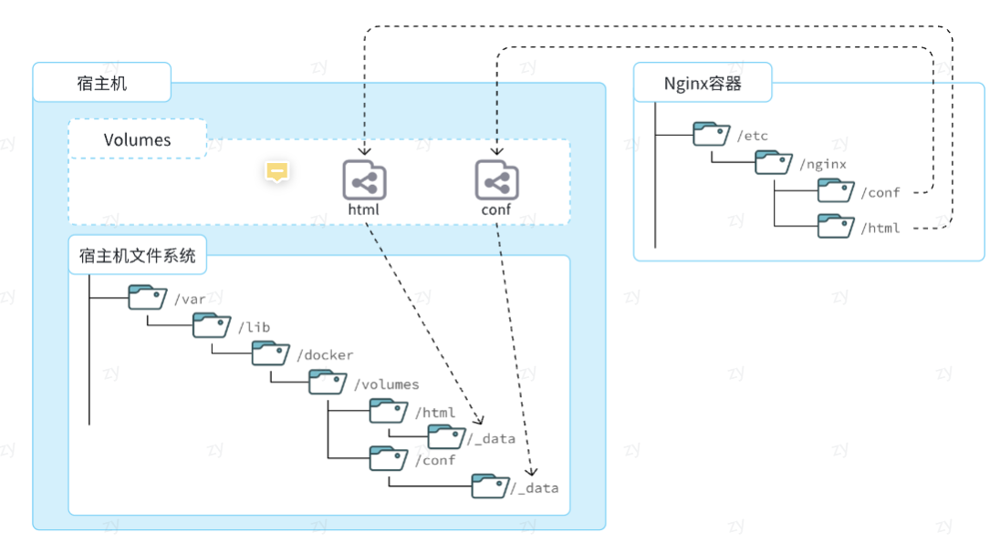

听了很久了，上下手
Docker 是一个用于开发，交付和运行应用程序的开放平台。Docker 使您能够将应用程序与基础架构分开，从而可以快速交付软件。借助 Docker，您可以与管理应用程序相同的方式来管理基础架构。通过利用 Docker 的方法来快速交付，测试和部署代码，您可以大大减少编写代码和在生产环境中运行代码之间的延迟。
# 引入
一款产品： 开发–上线 两套环境！应用环境，应用配置！
开发 — 运维。 问题：我在我的电脑上可以允许！版本更新，导致服务不可用！对于运维来说考验十分大？
环境配置是十分的麻烦，每一个机器都要部署环境 (集群 Redis、ES、Hadoop…) ! 费事费力。
发布一个项目 (jar + (Redis MySQL JDK ES) )，项目能不能带上环境安装打包！
之前在服务器配置一个应用的环境 Redis、MySQL、JDK、ES、Hadoop 配置超麻烦了，不能够跨平台。开发环境 Windows，最后发布到 Linux！
传统：开发 jar，运维来做！
现在：开发打包部署上线，一套流程做完！
安卓流程：java — apk — 发布（应用商店）—- 张三使用 apk 一安装即可用！
docker 流程： java-jar（环境） — 打包项目带上环境（镜像） — ( Docker 仓库：商店）——- 下载我们发布的镜像 —- 直接运行即可！
Docker 给以上的问题，提出了解决方案，其思想就来自于集装箱！
JRE – 多个应用 (端口冲突) – 原来都是交叉的！
隔离：Docker 核心思想！打包装箱！每个箱子是互相隔离的。
Docker 通过隔离机制，可以将服务器利用到极致！
https://zhuanlan.zhihu.com/p/442442997
# 安装
docker hub
- 配置 yam
yum install -y yum-utils | |
yum-config-manager --add-repo https://download.docker.com/linux/centos/docker-ce.repo |
- 安装
yum install -y docker-ce docker-ce-cli containerd.io docker-buildx-plugin docker-compose-plugin
- 校验 (指令)
# 启动Docker
systemctl start docker
# 测试
docker run hello-world
# 停止Docker
systemctl stop docker
- 镜像加速（阿里云为例子，在 控制台：产品与服务 -> 容器 -> 镜像工具里）
sudo mkdir -p /etc/docker
sudo tee /etc/docker/daemon.json <<-'EOF' {
"registry-mirrors": ["https://xxxx.mirror.aliyuncs.com"]
}
EOF
sudo systemctl daemon-reload
sudo systemctl restart docker
# 使用
- docker 官方有个镜像仓库（hub.docker.com 虽然现在更多是软件官方维护自己的），里面提供镜像（包括软件及其依赖环境，好比绿色免安装版），pull 下来后可以独立的运行各个镜像（容器）
- 在启动后，其实就是开了个 docker 的守护进程，等待命令。run 之后，就会从指定的仓库（默认或者设置的镜像地址）去拉取。便运行（不用重复拉取），可被重复部署（一台机器成集群都行）
MySQL 为例子
docker run -d \
--name mysql \
-p 3306:3306 \
-e TZ=Asia/Shanghai \
-e MYSQL_ROOT_PASSWORD=123 \
mysql
# 命令
官网指南
# 启动Docker
systemctl start docker
# 测试
docker run hello-world
# 停止Docker
systemctl stop docker
# 重启
systemctl restart docker
# 设置开机自启
systemctl enable docker
# Docker容器开机自启
docker update --restart=always [容器名/容器id]
# 执行docker ps命令，如果不报错，说明安装启动成功
docker ps
# 但docker有个关闭时也自动唤醒机制，用这个查看是否开启
systemctl status docker
# 开启的话 stop 会提示，并且stop了也能直接用docker
Warning: Stopping docker.service, but it can still be activated by:
docker.socket
# 该机制通过一下命令管理
systemctl stop/start docker.socket
# 查看运行的容器
docker ps
# 查看具体的属性（容器、卷等）
docker inspect 容器名
docker volume inspect 卷名
| 命令 | 说明 | 文档地址 |
|---|---|---|
| docker pull | 拉取镜像 | docker pull |
| docker push | 推送镜像到 DockerRegistry | docker push |
| docker images | 查看本地镜像 | docker images |
| docker rmi | 删除本地镜像 | docker rmi |
| docker run | 创建并运行容器（不能重复创建） | docker run |
| docker stop | 停止指定容器 | docker stop |
| docker start | 启动指定容器 | docker start |
| docker restart | 重新启动容器 | docker restart |
| docker rm | 删除指定容器 | docs.docker.com |
| docker ps | 查看容器 | docker ps |
| docker logs | 查看容器运行日志 | docker logs |
| docker exec | 进入容器 | docker exec |
| docker save | 保存镜像到本地压缩文件 | docker save |
| docker load | 加载本地压缩文件到镜像 | docker load |
| docker inspect | 查看容器详细信息 | docker inspect |
# 命令解读
docker run -d \
--name mysql \
-p 3305:3306 \
-e TZ=Asia/Shanghai \
-e MYSQL_ROOT_PASSWORD=123 \
mysql
解读：
docker run -d：创建并运行一个容器，-d则是让容器以后台进程运行
--namemysql: 给容器起个名字叫mysql，你可以叫别的
-p 3305:3306: 设置端口映射。
容器是隔离环境，外界不可访问。但是可以将宿主机端口映射容器内到端口，当访问宿主机指定端口时，就是在访问容器内的端口了。（如宿主机 ip：192.168.0.1 (即你服务器的 ip，可以直接访问)，容器会有独立的 ip，如 192.168.0.2 (无法被直接访问)，此时就需要端口映射来访问容器）
容器内端口往往是由容器内的进程决定，例如 MySQL 进程默认端口是 3306，因此容器内端口一定是 3306；而宿主机端口则可以任意指定，一般与容器内保持一致。
格式：
-p 宿主机端口:容器内端口，示例中就是将宿主机的 3306 映射到容器内的 3306 端口
-eTZ=Asia/Shanghai: 配置容器内进程运行时的一些参数，该参数要看官方设定
格式：
-e KEY=VALUE，KEY 和 VALUE 都由容器内进程决定案例中，
TZ=Asia/Shanghai是设置时区；MYSQL_ROOT_PASSWORD=123是设置 MySQL 默认密码
mysql: 设置镜像名称，Docker 会根据这个名字搜索并下载镜像
格式：
REPOSITORY:TAG，例如mysql:8.0，其中REPOSITORY可以理解为镜像名，TAG是版本号在未指定
TAG的情况下，默认是最新版本，也就是mysql:latest
# 第1步，去DockerHub查看nginx镜像仓库及相关信息
# 第2步，拉取Nginx镜像
docker pull nginx
# 第3步，查看镜像
docker images
# 结果如下：
REPOSITORY TAG IMAGE ID CREATED SIZE
nginx latest 605c77e624dd 16 months ago 141MB
mysql latest 3218b38490ce 17 months ago 516MB
# 第4步，创建并允许Nginx容器
docker run -d --name nginx -p 80:80 nginx
# 第5步，查看运行中容器
docker ps
# 也可以加格式化方式访问，格式会更加清爽
docker ps --format "table {{.ID}}\t{{.Image}}\t{{.Ports}}\t{{.Status}}\t{{.Names}}"
# 第6步，访问网页，地址：http://虚拟机地址
# 第7步，停止容器
docker stop nginx
# 第8步，查看所有容器
docker ps -a --format "table {{.ID}}\t{{.Image}}\t{{.Ports}}\t{{.Status}}\t{{.Names}}"
# 第9步，再次启动nginx容器
docker start nginx
# 第10步，再次查看容器
docker ps --format "table {{.ID}}\t{{.Image}}\t{{.Ports}}\t{{.Status}}\t{{.Names}}"
# 第11步，查看容器详细信息
docker inspect nginx
# 第12步，进入容器,查看容器内目录
docker exec -it nginx bash
# 或者，可以进入MySQL
docker exec -it mysql mysql -uroot -p
# 第13步，删除容器
docker rm nginx
# 发现无法删除，因为容器运行中，强制删除容器
docker rm -f nginx
镜像的名称不是随意的，而是要到 DockerRegistry 中寻找，镜像运行时的配置也不是随意的，要参考镜像的帮助文档，这些在 DockerHub 网站或者软件的官方网站中都能找到。
如果我们要安装其它软件，也可以到 DockerRegistry 中寻找对应的镜像名称和版本，阅读相关配置即可。
# Linux 别名
docker ps --format "table {{.ID}}\t{{.Image}}\t{{.Ports}}\t{{.Status}}\t{{.Names}}" 太麻烦了，
# 修改/root/.bashrc文件
vi /root/.bashrc
内容如下：
# .bashrc
# User specific aliases and functions
alias rm='rm -i'
alias cp='cp -i'
alias mv='mv -i'
alias dps='docker ps --format "table {{.ID}}\t{{.Image}}\t{{.Ports}}\t{{.Status}}\t{{.Names}}"'
alias dis='docker images'
# Source global definitions
if [ -f /etc/bashrc ]; then
. /etc/bashrc
fi
source /root/.bashrc 生效
# 数据卷
容器是隔离环境，容器内程序的文件、配置、运行时产生的容器都在容器内部
- 如果要升级 MySQL 版本，需要销毁旧容器，那么数据岂不是跟着被销毁了？
- MySQL、Nginx 容器运行后，如果我要修改其中的某些配置该怎么办？
- 我想要让 Nginx 代理我的静态资源怎么办？
因此，容器提供程序的运行环境，但是程序运行产生的数据、程序运行依赖的配置都应该与容器解耦。
数据卷（volume） 是一个虚拟目录，是容器内目录与宿主机 **** 目录之间映射的桥梁。
以 Nginx 为例，我们知道 Nginx 中有两个关键的目录：
html：放置一些静态资源conf：放置配置文件
如果我们要让 Nginx 代理我们的静态资源，最好是放到 html 目录；如果我们要修改 Nginx 的配置，最好是找到 conf 下的 nginx.conf 文件。
但遗憾的是，容器运行的 Nginx 所有的文件都在容器内部。所以我们必须利用数据卷将两个目录与宿主机目录关联，方便我们操作。如图：

在上图中：
我们创建了两个数据卷：
conf、htmlNginx 容器内部的
conf目录和html目录分别与两个数据卷关联。而数据卷 conf 和 html 分别指向了宿主机的
/var/lib/docker/volumes/conf/_data目录和/var/lib/docker/volumes/html/_data目录
这样以来，容器内的 conf 和 html 目录就 与宿主机的 conf 和 html 目录关联起来，我们称为挂载。此时，我们操作宿主机的 /var/lib/docker/volumes/html/_data 就是在操作容器内的 /usr/share/nginx/html/_data 目录。只要我们将静态资源放入宿主机对应目录，就可以被 Nginx 代理了。
# 命令
| 命令 | 说明 | 文档地址 |
|---|---|---|
| docker volume create | 创建数据卷 | docker volume create |
| docker volume ls | 查看所有数据卷 | docs.docker.com |
| docker volume rm | 删除指定数据卷 | docs.docker.com |
| docker volume inspect | 查看某个数据卷的详情 | docs.docker.com |
| docker volume prune | 清除数据卷 | docker volume prune |
# 挂载本地目录
-v 本地目录:容器内目录
# 挂载本地文件
-v 本地文件:容器内文件
演示：
# 1.首先创建容器并指定数据卷，注意通过
# -v 参数来指定数据卷 卷名:容器内路径 /
docker run -d --name nginx -p 80:80 -v html:/usr/share/nginx/html nginx
# 2.然后查看数据卷
docker volume ls
# 结果
DRIVER VOLUME NAME
local 29524ff09715d3688eae3f99803a2796558dbd00ca584a25a4bbc193ca82459f
local html
# 3.查看数据卷详情
docker volume inspect html
# 结果
[
{
"CreatedAt": "2024-05-17T19:57:08+08:00",
"Driver": "local",
"Labels": null,
"Mountpoint": "/var/lib/docker/volumes/html/_data",
"Name": "html",
"Options": null,
"Scope": "local"
}
]
# 4.查看/var/lib/docker/volumes/html/_data目录
ll /var/lib/docker/volumes/html/_data
# 可以看到与nginx的html目录内容一样，结果如下：
总用量 8
-rw-r--r--. 1 root root 497 12月 28 2021 50x.html
-rw-r--r--. 1 root root 615 12月 28 2021 index.html
# 5.进入该目录，并随意修改index.html内容
cd /var/lib/docker/volumes/html/_data
vi index.html
# 6.打开页面，查看效果
# 7.进入容器内部，查看/usr/share/nginx/html目录内的文件是否变化
docker exec -it nginx bash
# 自定义镜像
也就是实际开发中可能要在团队内互传环境，便于使用（打包 + 安装）
以 java 环境为例
- 准备 Linux 运行环境（java 项目并不需要完整的操作系统，仅仅是基础运行环境即可）
- 安装并配置 JDK
- 拷贝 jar 包
- 配置启动脚本
上述步骤中的每一次操作其实都是在生产一些文件（系统运行环境、函数库、配置最终都是磁盘文件），所以镜像就是一堆文件的集合。
但需要注意的是，镜像文件不是随意堆放的，而是按照操作的步骤分层叠加而成，每一层形成的文件都会单独打包并标记一个唯一 id，称为 Layer（层）。这样，如果我们构建时用到的某些层其他人已经制作过，就可以直接拷贝使用这些层，而不用重复制作。
分层：减少工作 + 共享
# Dockerfile 指令
| 指令 | 说明 | 示例 |
|---|---|---|
| FROM | 指定基础镜像 | FROM centos:6 |
| ENV | 设置环境变量，可在后面指令使用 | ENV key value |
| COPY | 拷贝本地文件到镜像的指定目录 | COPY ./xx.jar /tmp/app.jar |
| RUN | 执行 Linux 的 shell 命令，一般是安装过程的命令 | RUN yum install gcc |
| EXPOSE | 指定容器运行时监听的端口，是给镜像使用者看的 | EXPOSE 8080 |
| ENTRYPOINT | 镜像中应用的启动命令，容器运行时调用 | ENTRYPOINT java -jar xx.jar |
# 指定基础镜像
FROM ubuntu:16.04
# 配置环境变量，JDK的安装目录、容器内时区
ENV JAVA_DIR=/usr/local
ENV TZ=Asia/Shanghai
# 拷贝jdk和java项目的包
COPY ./jdk8.tar.gz $JAVA_DIR/
COPY ./docker-demo.jar /tmp/app.jar
# 设定时区
RUN ln -snf /usr/share/zoneinfo/$TZ /etc/localtime && echo $TZ > /etc/timezone
# 安装JDK
RUN cd $JAVA_DIR \
&& tar -xf ./jdk8.tar.gz \
&& mv ./jdk1.8.0_144 ./java8
# 配置环境变量
ENV JAVA_HOME=$JAVA_DIR/java8
ENV PATH=$PATH:$JAVA_HOME/bin
# 指定项目监听的端口
EXPOSE 8080
# 入口，java项目的启动命令
ENTRYPOINT ["java", "-jar", "/app.jar"]
有人提供了基础的系统加 JDK 环境，我们在此基础上制作 java 镜像，就可以省去 JDK 的配置了：
# 基础镜像
FROM openjdk:11.0-jre-buster
# 设定时区
ENV TZ=Asia/Shanghai
RUN ln -snf /usr/share/zoneinfo/$TZ /etc/localtime && echo $TZ > /etc/timezone
# 拷贝jar包
COPY docker-demo.jar /app.jar
# 入口
ENTRYPOINT ["java", "-jar", "/app.jar"]
# 构建
将上述 Dockerfile 文件和要打包的 jar 包放一起
# 进入镜像目录
cd /root/demo
# 开始构建
docker build -t docker-demo:1.0 .
命令说明：
docker build: 就是构建一个 docker 镜像-t docker-demo:1.0：-t参数是指定镜像的名称（repository和tag）.: 最后的点是指构建时 Dockerfile 所在路径，由于我们进入了 demo 目录，所以指定的是.代表当前目录，也可以直接指定为某目录
之后 docker images 就看得到了，然后正常 run 使用
# 网络
多服务之间可能需要互相访问，本节就是容器之间访问的整理。
虽然外部不能访问容器（只能映射的接口），但容器之间本身在一个网段。所有的容器都以 bridge 的形式连接到 docker 的一个虚拟网桥上
但是，容器的网络 IP 其实是一个虚拟的 IP，其值并不固定与某一个容器绑定，如果我们在开发时写死某个 IP，而再部署时很可能容器的 IP 会发生变化，连接会失败。
| 命令 | 说明 | 文档地址 |
|---|---|---|
| docker network create | 创建一个网络 | docker network create |
| docker network ls | 查看所有网络 | docs.docker.com |
| docker network rm | 删除指定网络 | docs.docker.com |
| docker network prune | 清除未使用的网络 | docs.docker.com |
| docker network connect | 使指定容器连接加入某网络 | docs.docker.com |
| docker network disconnect | 使指定容器连接离开某网络 | docker network disconnect |
| docker network inspect | 查看网络详细信息 | docker network inspect |
# 1.首先通过命令创建一个网络
docker network create hmall
# 2.然后查看网络
docker network ls
# 结果：
NETWORK ID NAME DRIVER SCOPE
639bc44d0a87 bridge bridge local
403f16ec62a2 hmall bridge local
0dc0f72a0fbb host host local
cd8d3e8df47b none null local
# 其中，除了hmall以外，其它都是默认的网络
# 3.让dd和mysql都加入该网络，注意，在加入网络时可以通过--alias给容器起别名
# 这样该网络内的其它容器可以用别名互相访问！
# 3.1.mysql容器，指定别名为db，另外每一个容器都有一个别名是容器名
docker network connect hmall mysql --alias db
# 3.2.db容器，也就是我们的java项目
docker network connect hmall dd
# 4.进入dd容器，尝试利用别名访问db
# 4.1.进入容器
docker exec -it dd bash
# 4.2.用db别名访问
ping db
# 结果
PING db (172.18.0.2) 56(84) bytes of data.
64 bytes from mysql.hmall (172.18.0.2): icmp_seq=1 ttl=64 time=0.070 ms
64 bytes from mysql.hmall (172.18.0.2): icmp_seq=2 ttl=64 time=0.056 ms
# 4.3.用容器名访问
ping mysql
# 结果：
PING mysql (172.18.0.2) 56(84) bytes of data.
64 bytes from mysql.hmall (172.18.0.2): icmp_seq=1 ttl=64 time=0.044 ms
64 bytes from mysql.hmall (172.18.0.2): icmp_seq=2 ttl=64 time=0.054 ms
这样可以将有需要的服务放在一个网桥，通过命名访问即可，无需管虚拟 ip
# 项目部署案例
见资料中的文档
# DockerCompose
部署一个简单的 java 项目，其中包含 3 个容器：
- MySQL
- Nginx
- Java 项目
而稍微复杂的项目，其中还会有各种各样的其它中间件，需要部署的东西远不止 3 个。如果还像之前那样手动的逐一部署，就太麻烦了。
而 Docker Compose 就可以帮助我们实现多个相互关联的 Docker 容器的快速部署。它允许用户通过一个单独的 docker-compose.yml 模板文件（YAML 格式）来定义一组相关联的应用容器。
docker-compose.yml 文件的基本语法可以参考官方文档
docker-compose 文件中可以定义多个相互关联的应用容器，每一个应用容器被称为一个服务（service）。由于 service 就是在定义某个应用的运行时参数，因此与 docker run 参数非常相似。
举例来说，用 docker run 部署 MySQL 的命令如下：
docker run -d \
--name mysql \
-p 3306:3306 \
-e TZ=Asia/Shanghai \
-e MYSQL_ROOT_PASSWORD=123 \
-v ./mysql/data:/var/lib/mysql \
-v ./mysql/conf:/etc/mysql/conf.d \
-v ./mysql/init:/docker-entrypoint-initdb.d \
--network hmall
mysql
如果用 docker-compose.yml 文件来定义，就是这样：
version: "3.8"
services:
mysql:
image: mysql
container_name: mysql
ports:
- "3306:3306"
environment:
TZ: Asia/Shanghai
MYSQL_ROOT_PASSWORD: 123
volumes:
- "./mysql/conf:/etc/mysql/conf.d"
- "./mysql/data:/var/lib/mysql"
networks:
- new
networks:
new:
name: hmall
对比如下：
| docker run 参数 | docker compose 指令 | 说明 |
|---|---|---|
| --name | container_name | 容器名称 |
| -p | ports | 端口映射 |
| -e | environment | 环境变量 |
| -v | volumes | 数据卷配置 |
| --network | networks | 网络 |
# 命令
官方文档
基本语法如下：
docker compose [OPTIONS] [COMMAND]
其中，OPTIONS 和 COMMAND 都是可选参数，比较常见的有：
| 类型 | 参数或指令 | 说明 |
|---|---|---|
| Options | -f | 指定 compose 文件的路径和名称 |
| -p | 指定 project 名称。project 就是当前 compose 文件中设置的多个 service 的集合，是逻辑概念 | |
| Commands | up | 创建并启动所有 service 容器 |
| down | 停止并移除所有容器、网络 | |
| ps | 列出所有启动的容器 | |
| logs | 查看指定容器的日志 | |
| stop | 停止容器 | |
| start | 启动容器 | |
| restart | 重启容器 | |
| top | 查看运行的进程 | |
| exec | 在指定的运行中容器中执行命令 |
教学演示：
# 1.进入root目录
cd /root
# 2.删除旧容器
docker rm -f $(docker ps -qa)
# 3.删除hmall镜像
docker rmi hmall
# 4.清空MySQL数据
rm -rf mysql/data
# 5.启动所有, -d 参数是后台启动
docker compose up -d
# 结果：
[+] Building 15.5s (8/8) FINISHED
=> [internal] load build definition from Dockerfile 0.0s
=> => transferring dockerfile: 358B 0.0s
=> [internal] load .dockerignore 0.0s
=> => transferring context: 2B 0.0s
=> [internal] load metadata for docker.io/library/openjdk:11.0-jre-buster 15.4s
=> [1/3] FROM docker.io/library/openjdk:11.0-jre-buster@sha256:3546a17e6fb4ff4fa681c3 0.0s
=> [internal] load build context 0.0s
=> => transferring context: 98B 0.0s
=> CACHED [2/3] RUN ln -snf /usr/share/zoneinfo/Asia/Shanghai /etc/localtime && echo 0.0s
=> CACHED [3/3] COPY hm-service.jar /app.jar 0.0s
=> exporting to image 0.0s
=> => exporting layers 0.0s
=> => writing image sha256:32eebee16acde22550232f2eb80c69d2ce813ed099640e4cfed2193f71 0.0s
=> => naming to docker.io/library/root-hmall 0.0s
[+] Running 4/4
✔ Network hmall Created 0.2s
✔ Container mysql Started 0.5s
✔ Container hmall Started 0.9s
✔ Container nginx Started 1.5s
# 6.查看镜像
docker compose images
# 结果
CONTAINER REPOSITORY TAG IMAGE ID SIZE
hmall root-hmall latest 32eebee16acd 362MB
mysql mysql latest 3218b38490ce 516MB
nginx nginx latest 605c77e624dd 141MB
# 7.查看容器
docker compose ps
# 结果
NAME IMAGE COMMAND SERVICE CREATED STATUS PORTS
hmall root-hmall "java -jar /app.jar" hmall 54 seconds ago Up 52 seconds 0.0.0.0:8080->8080/tcp, :::8080->8080/tcp
mysql mysql "docker-entrypoint.s…" mysql 54 seconds ago Up 53 seconds 0.0.0.0:3306->3306/tcp, :::3306->3306/tcp, 33060/tcp
nginx nginx "/docker-entrypoint.…" nginx 54 seconds ago Up 52 seconds 80/tcp, 0.0.0.0:18080-18081->18080-18081/tcp, :::18080-18081->18080-18081/tcp
# 资料
黑马的：文档，可以去官号支持，至少资料免费，也有用